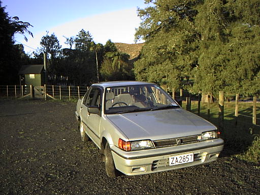
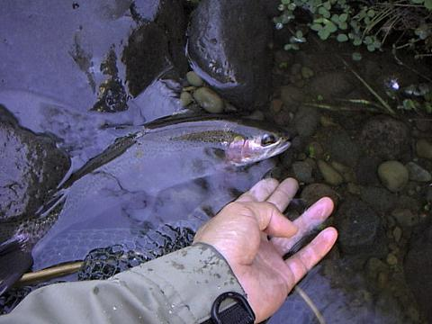

エッセイ
虹の彼方に
ニュージーランドは虹の国である。にわか雨、シャワーが多く、雨の後すぐに太陽が射すことが頻繁にあるため、しょっちゅう虹が出る。一度などはオークランドの市街地で、虹の端から端まで180度、完全な虹を長時間見たこともある。山国育ちの僕は、完全な虹というものをそれまで見たことが無かったので、いたく感動した覚えがある。
大学の生活にも慣れて、車も日本から届き、そろそろ釣りに行きたいなと思っていた頃、ちょうど雨が降った。夜、ベッドの中で、大きくなってきた雨音を聞いていると、こんな雨なら山の渓流は、明日、頃合の良い水加減になっているだろうと思えた。
翌日、Fish & Gameが出しているガイドブックを見て、ハミルトンの西、車で30分ほどの所にあるピロンギア山から出ている渓流に向かった。ニュージーランドへ来て、ガイド無しで自力で探した初めての渓流である。オークランドで過ごした９ヶ月の語学学校時代には、まったく鱒釣りには縁が無かったので、久しぶりの渓流釣りである。
幹線道路を外れ、牧場の中にちらほらと民家のあるだけの農道へ入り、農道の舗装が終わり、砂利道の中を埃を上げながら目的の川へと向かう。こんなくねくねの砂利道でも制限速度は100km/hなのが不思議で可笑しい。そのまんまWRCの世界である。小さな峠を越えて坂を下りると橋があり、そのそばに小さな駐車場があった。川に沿ってピロンギア山まで向かうハイキングコースがあり、その利用者のための駐車場らしい。駐車場の横には簡易トイレまで整備してあった。いそいそと車を止め、せわしなく釣りの支度をする。

川へ降りると、どこか日本の里川を思わせる渓相であった。川幅は狭く、夕べの雨でだいぶ増水し、褐色に濁っている。橋の下が長瀞の淵になっていて、その頭が絶好のポイントになっている。そっと流れに足を踏み入れ、背後の木に注意しながらイエローハンピーの12番をキャストすると、藪の被さった流れ出しの水面に黄色の斑点がふっと浮かび、流れに乗って下ってくる。しかし、水面は割れない。数回のキャストのあと、そのポイントをあきらめて上流へと向かった。上流も渓相は変わらず、牧場の中、どこか懐かしい流れが続いている。果たしてブラウンが出るのかレインボーが出るのか、それはガイドブックに書いてなかったので分からない。フライは無難なハンピーを結んでいるが、それが良いのか、果たして魚がいるのかどうかも分からない。
両岸が潅木に覆われている荒瀬でそれは来た。左岸の弛みに乗せて流したハンピーがいきなりのしぶきに覆われた。反射的に合わせると、ぐぐっと手応えがあり、UFM#5-4のパックロッドが引き絞られた。
「ああっ！ 魚はいるんだっ！」
夢中で竿を立て、抗う鱒にこちらも抵抗する。荒れた水面の中で鱒の白い腹が光る。リーダーが水面に飛線を作る。派手に暴れながら尺にちょっと届かないくらいのレインボーが上がってきた。
「小さいくせによく引くなぁ…….」
引きのよさに感激しながら初物の鱒をランディングネットですくい、しげしげと見つめる。きれいな虹の帯が体側に浮かんでいる。よし！これでいける、とこの川に自信を持ち、次のポイントを目指す。

鱒は居た。あちらこちらの良いポイントからは、必ずといっていいほど良い型の鱒が顔を出して竿を引き絞った。牧場と川の間にはピロンギア山に続くハイキング用の小道が付いていて、実に遡行しやすい。小道を歩いては良いポイントに降りて竿を出す。鱒がフライに飛びつく。ほんの小さな渓流なのだが、驚くほど大きな鱒が居て驚かされる。レインボーがジャンプすると、空中に一瞬虹が架かる。心躍る格闘の後、何本もの虹を手のひらに乗せた。さっきまで激しく躍動していた虹は、静かに掌の中で横たわっている。
両岸に背の高い柳の生い茂るポイントに来た。ぼろぼろになったハンピーに代えて、ロイヤルウルフを結ぶ。サイズは10番。柳の奥から流れ出す褐色の流れに、手前のポイントから順にフライをキャストする。一筋、二筋、そして次の筋へ。流れは沈黙している。どんづまりの流れ込みにキャストしたロイヤルウルフが水面に落ちた瞬間、黒い鼻先が浮上してそれを飲み込んだ。ふっと間をおいて合わせると、いきなり鱒が上流へ突進した。ハーディのディスクドラグから軽々とラインを引き出し、落ち込みを遡ってさらに鱒は突進を続ける。と、いきなりロッドが軽くなり、熱い突進は跡形も無く消えた。日本の渓流では５Ｘが標準だったので、川の規模から言って同等の５Ｘで良いだろうと思っていたのが甘かった。どうやらここの鱒は驚くべきパワーを持っているらしい。また、今のヤツのサイズはこの川での最大クラスであったのだろう。呆然と立ち尽くす僕の両側で、柳の枝だけが静かに揺れていた。
帰り道、川岸の小道を橋へとたどりながら、これまで釣ってきたポイントを横目で見てゆく。１尾１尾を、静かに反芻しながら、今日の鱒たちの虹の洗礼を、心の中で思い浮かべた。ニュージーランドの空に架かる虹が乗り移ったかのような、鮮やかな虹鱒たちであった。
エッセイ 目次へ
サイトマップ
ホームへ
お問い合わせ